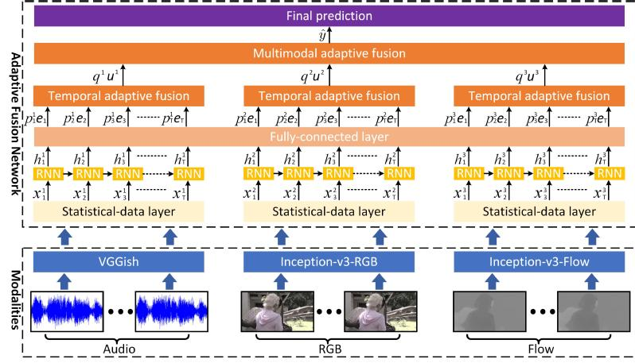
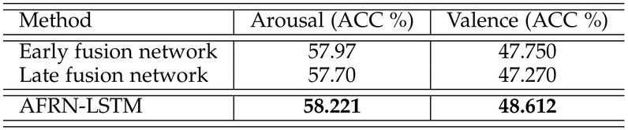
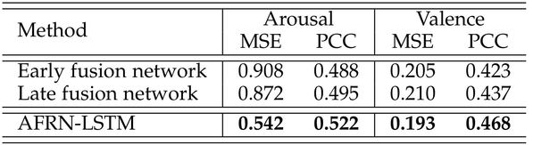
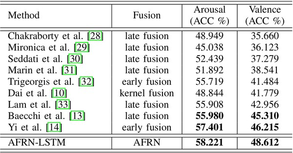
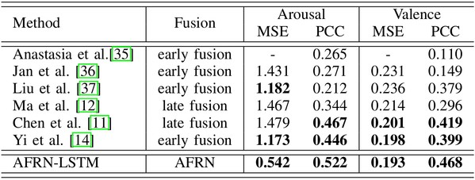
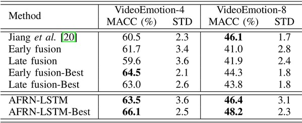

Affective Video Content Analysis with Adaptive Fusion Recurrent Network
Yun Yi, Hanli Wang and Qinyu Li
Overview:
Affective video content analysis is an important research topic in video content analysis and has extensive applications. Intuitively, multimodal features can depict elicited emotions, and the accumulation of temporal inputs influences the viewer's emotion. Although a number of research works have been proposed for this task, the adaptive weights of modalities and the correlation of temporal inputs are still not well studied. To address these issues, a novel framework is designed to learn the weights of modalities and temporal inputs from video data. Specifically, three network layers are designed, including statistical-data layer to improve the robustness of data, temporal-adaptive-fusion layer to fuse temporal inputs, and multimodal-adaptive-fusion layer to combine multiple modalities. In particular, the feature vectors of three input modalities are respectively extracted from three pre-trained convolutional neural networks and then fed to three statistical-data layers. Then, the output vectors of these three statistical-data layers are separately connected to three recurrent layers, and the corresponding outputs are fed to a fully-connected layer which shares parameters across modalities and temporal inputs. Finally, the outputs of the fully-connected layer are fused by the temporal-adaptive-fusion layer and then combined by the multimodal-adaptive-fusion layer. To discover the correlation of both multiple modalities and temporal inputs, adaptive weights of modalities and temporal inputs are introduced into loss functions for model training, and these weights are learned by an optimization algorithm. Extensive experiments are conducted on two challenging datasets, which demonstrate that the proposed method achieves better performances than baseline and other state-of-the-art methods.
Method:
An Adaptive Fusion Recurrent Network (AFRN) is proposed, which learns the weights of multiple modalities and temporal inputs from video data. To achieve this, statistical-data layer is designed to improve the robustness of data, temporal-adaptive-fusion layer is devised to adaptively fuse temporal inputs, and multimodal-adaptive-fusion layer is designed to adaptively combine multiple modalities. In order to depict emotions, three features are calculated from Convolutional Neural Networks (CNN), including Inception-v3-RGB, Inception-v3-Flow and VGGish, which consider the three major characteristics of video content: spatial image, temporal motion and audio, respectively.
An overview of the proposed framework is shown in Fig. 1. First, the vectors of the aforementioned three features are respectively fed to three statistical-data layers to improve the robustness of data, and the outputs of statistical-data layers are separately connected to three recurrent layers. Because human perceives emotions from all temporal inputs, all outputs of the three recurrent layers are connected to a fully-connected layer which shares parameters across temporal inputs and features. Then, the outputs of the fully-connected layer are separately fused by three temporal-adaptive-fusion layers with the outputs being combined by the multimodal-adaptive-fusion layer. By this way, adaptive weights of modalities and temporal inputs are introduced into the loss functions. Finally, these weights are learned by using the optimization algorithm Adam. Extensive experiments are conducted on the LIRIS-ACCEDE dataset and the VideoEmotion dataset. LIRIS-ACCEDE includes the MediaEval 2015 Affective Impact of Movies Task (AIMT15) and the MediaEval 2016 Emotional Impact of Movies Task (EIMT16). To the best of our knowledge, LIRIS-ACCEDE is the largest dataset for affective video content analysis. The experimental results show that the proposed method obtains better performances than the baseline methods and achieves the state-of-the-art results on these two datasets.

Fig. 1 An overview of the proposed affective content analysis framework.
Result:
The LIRIS-ACCEDE dataset contains more than 9,800 short video excerpts extracted from 160 movies. To the best of our knowledge, LIRIS-ACCEDE is the largest dataset for affective video content analysis. Therefore, the proposed AFRN is evaluated on LIRIS-ACCEDE. The experiments on LIRIS-ACCEDE consist of two tasks, i.e. the classification task proposed by AIMT15 and the regression task proposed by EIMT16. In practice, AIMT15 includes 10,900 short video clips, which are split into 6,144 training videos and 4,756 test videos, respectively. Global accuracy (ACC) is the official evaluation metric for AIMT15. Regarding EIMT16, it includes 11,000 short video clips, which are split into 9,800 training videos and 1,200 test videos. MSE and Pearson Correlation Coefficient (PCC) are the official evaluation metrics for EIMT16. All metrics are calculated separately in these two affect domains, and the official protocols are employed in this work. In order to make fair comparisons, the official lists for training and testing are used in all experiments.
In addition to LIRIS-ACCEDE, experiments are also conducted on the VideoEmotion dataset, which contains 1,101 user-generated videos. The subset of VideoEmotion includes 4 emotions (i.e., ``Anger'', ``Fear'', ``Joy'', ``Sadness''), and the entire set of VideoEmotion has 8 emotion categories. In the following, we represent the subset and entire set of VideoEmotion as ``VideoEmotion-4'' and ``VideoEmotion-8'', respectively. For the experimental evaluation on VideoEmotion-4 and VideoEmotion-8, Jiang et al. generate 10 train-test splits, and each split uses 2/3 of the video data for training and 1/3 for testing. Therefore, there are about 369 videos for training and 180 videos for testing on VideoEmotion-4, and there are 736 videos for training and other 365 videos for testing on VideoEmotion-8. In all experiments, we follow the official protocol using 10 train-test splits, and report the mean and standard-deviation of the 10 predicted accuracy values.
Early fusion and late fusion are simple and efficient techniques to combine multiple modalities, which are widely employed by a number of state-of-the-art methods. Therefore, these two techniques are selected to build the baseline networks, namely the early fusion network and the late fusion network. The early fusion network combines the vectors of the three input modalities before the recurrent layer. Then the connected vectors are used as the input of LSTM, and the outputs of LSTM are connected to a Fully-Connected (FC) layer. On the other hand, the late fusion network separately feeds the vectors of the three input modalities to three LSTMs. Then the outputs of LSTMs are connected to three FC layers respectively. Finally, the outputs of the three FC layers are combined to obtain the final prediction. In order to make a fair comparison, all the evaluations utilize the same experimental setup except the fusion scheme. The comparative experimental results are shown in Table 1 and Table 2, respectively.
Table 1 Comparison with baseline methods on AIMT15.

Table 2 Comparison with baseline methods on EIMT16.

On AIMT15, EIMT16 and VideoEmotion, comparisons of the proposed AFRN-LSTM with other state-of-the-art methods is shown in Table 3, Table 4 and Table 5, respectively, where ``-'' indicates that no available results are reported by the cited publications.
Table 3 Comparison with state-of-the-arts on AIMT15.

Table 4 Comparison with state-of-the-arts on EIMT16.

Table 5 Comparison on the VideoEmotion dataset.

Source Code:
Original illustration: image placeholderAFRN_V1.0.zip
Citation:
Please cite the following paper if you use this code:
Yun Yi, Hanli Wang and Qinyu Li, Affective Video Content Analysis with Adaptive Fusion Recurrent Network, IEEE Transactions on Multimedia, vol. 22, no. 9, pp. 2454-2466, Sept. 2020.